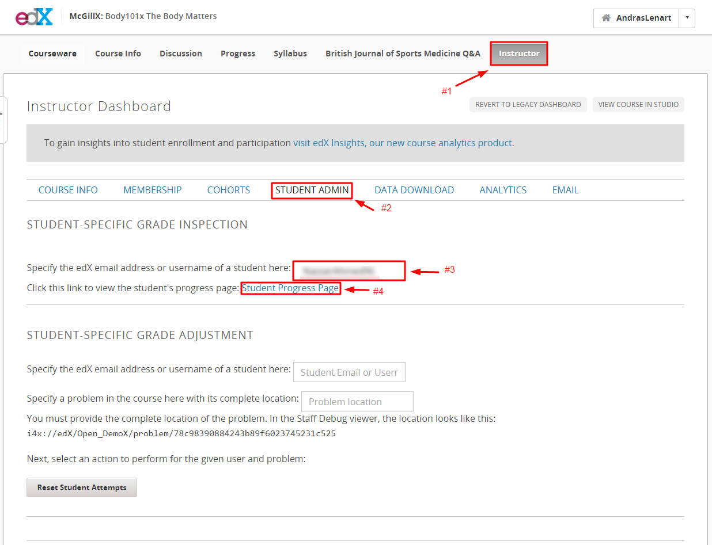
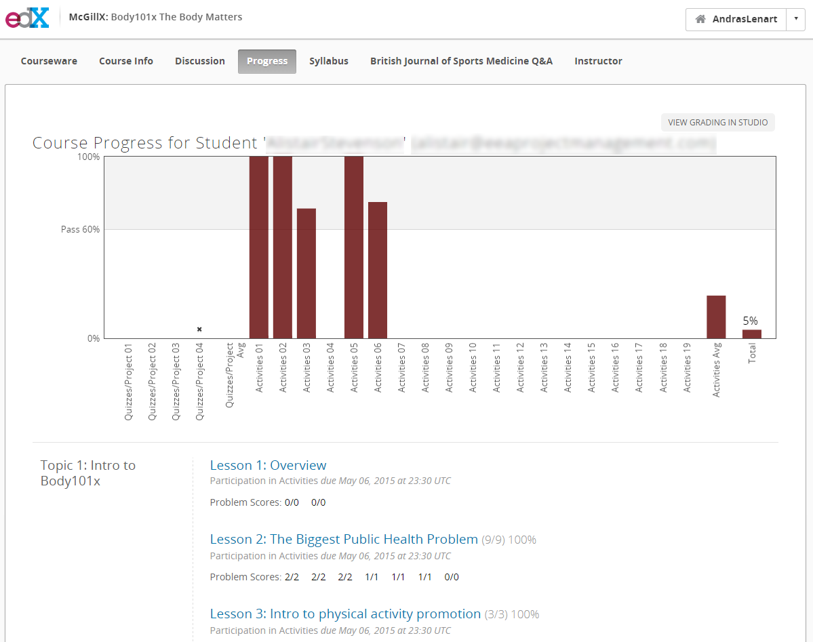
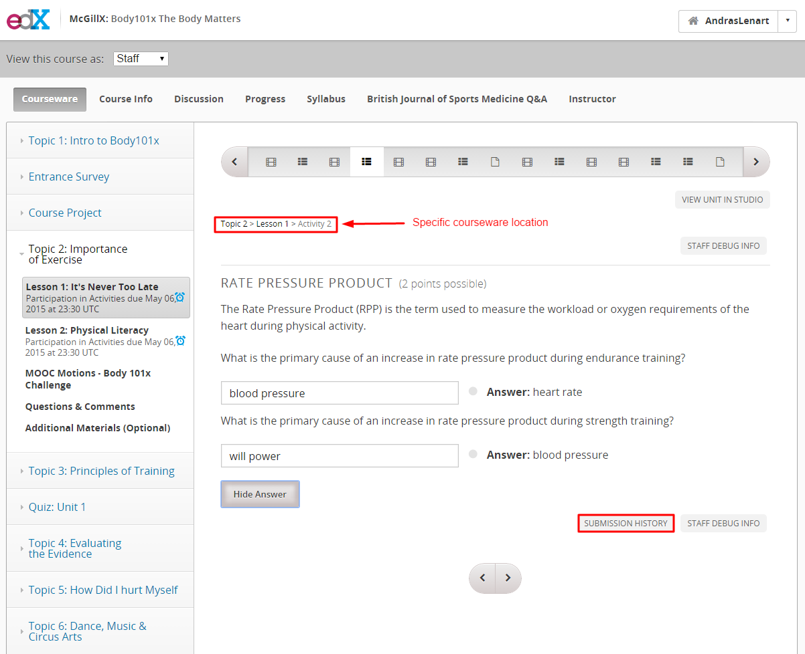
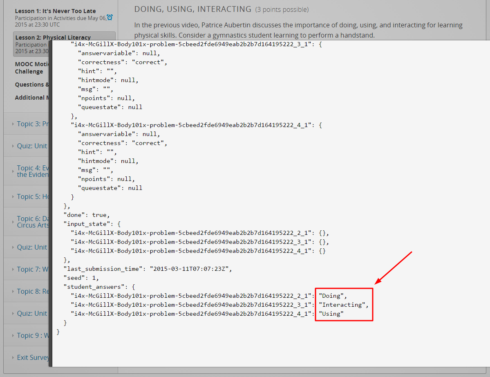
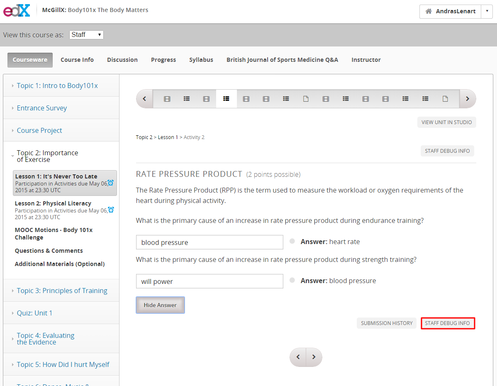
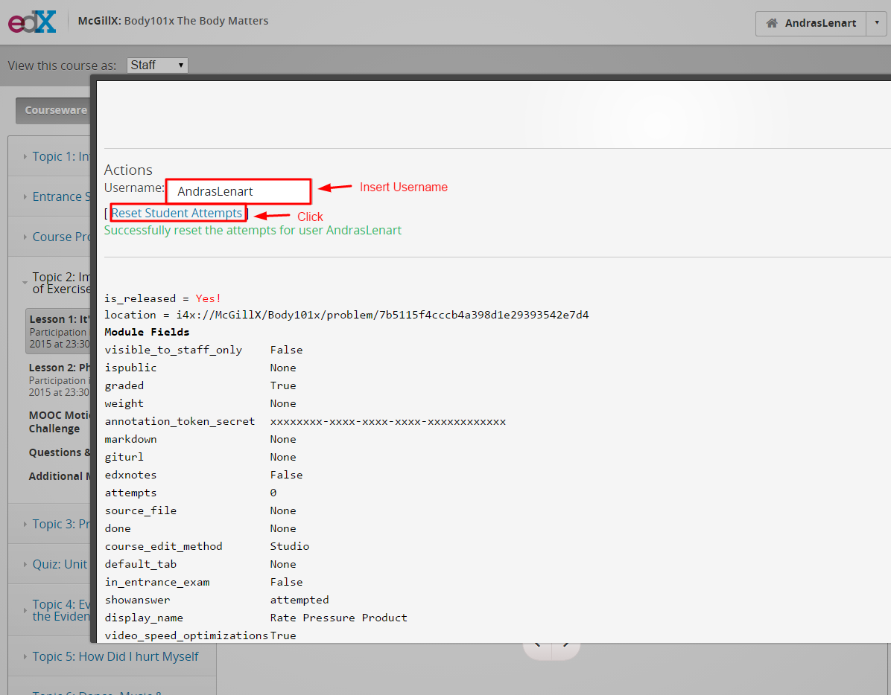

Common Issues and Resolutions¶
UTC Time Zone Due Dates¶
Students will frequently be confused by the due dates, not realizing that the deadlines are stated in the UTC/GMT time zone. You can suggest they visit use a website such as timeanddate to convert UTC time to their local time.
We try to avoid issues of confusion by setting soft deadlines, meaning the deadline that appears to students is often many hours in advance of the actual deadline.
Problems with Drag and Drop¶
Students may complain about not being able to complete the drag-and-drop questions on their tablets or phones. Notify them this is a limitation of the edX platform which McGillX has no control over. edX is working towards creating mobile friendly interactions for the future. Advise them to answer the questions on another device.
Student Progress Page¶
The Progress Page is accessible from the main header. This is where students can check their own course progress.
To check a specific students progress, click the instructor tab, then the student admin sub-tab. Insert the student’s email address or username into the box, and click the “Student Progress Page” hyperlink.


Problem Submission History¶
To look at a student’s responses to a specific question:
- Find the question location in the courseware. (Students will typically complain about specific questions located on a single page.)
- Click “Submission History” and enter the student’s username. You can now scroll through all of the students submissions, and see the location of the question. At times it might be hard to find the answer in the code (which is written in JSON), so keep in mind what the answer should look like.


Reset Problem Attempts¶
To reset a student’s submissions, find the question in the courseware and click “staff debug info”. Enter the student’s username, and click “Reset Student Attempts”.

